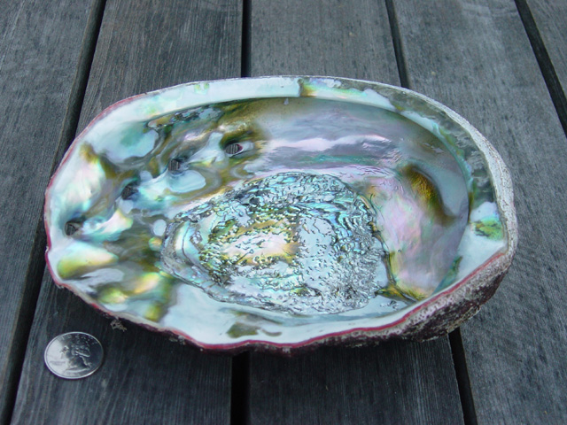

by Brandon Saint-John
Mauris in lorem nisl. Maecenas tempus facilisis ante, eget viverra nisl tincidunt et. Donec turpis lectus, mattis ac malesuada a, accumsan eu libero. Morbi condimentum, tortor et tincidunt ullamcorper, sem quam pretium nulla, id convallis lectus libero nec turpis. Proin dapibus nisi id est sodales nec ultrices tortor pellentesque.
use ferris_says::say; // from the previous step
use std::io::{stdout, BufWriter};
fn main() {
let stdout = stdout();
let message = String::from("Hello fellow Rustaceans!");
let width = message.chars().count();
let mut writer = BufWriter::new(stdout.lock());
say(&message, width, &mut writer).unwrap();
}Vivamus vel nisi ac lacus sollicitudin vulputate ac ut ligula. Nullam feugiat risus eget eros gravida in molestie sapien euismod. Nunc sed hendrerit orci. Nulla mollis consequat lorem ac blandit. Ut et turpis mauris. Nulla est odio, posuere id ullamcorper sit amet, tincidunt vel justo. Curabitur placerat tincidunt varius. Nulla vulputate, ipsum eu consectetur mollis, dui nibh aliquam neque, at ultricies leo ligula et arcu.
import unittest
class TestStatisticalFunctions(unittest.TestCase):
def test_average(self):
self.assertEqual(average([20, 30, 70]), 40.0)
self.assertEqual(round(average([1, 5, 7]), 1), 4.3)
with self.assertRaises(ZeroDivisionError):
average([])
with self.assertRaises(TypeError):
average(20, 30, 70)
unittest.main() # Calling from the command line invokes all testsMauris in lorem nisl. Maecenas tempus facilisis ante, eget viverra nisl tincidunt et. Donec turpis lectus, mattis ac malesuada a, accumsan eu libero. Morbi condimentum, tortor et tincidunt ullamcorper, sem quam pretium nulla, id convallis lectus libero nec turpis. Proin dapibus nisi id est sodales nec ultrices tortor pellentesque.
>>> # dates are easily constructed and formatted
>>> from datetime import date
>>> now = date.today()
>>> now
datetime.date(2003, 12, 2)
>>> now.strftime("%m-%d-%y. %d %b %Y is a %A on the %d day of %B.")
'12-02-03. 02 Dec 2003 is a Tuesday on the 02 day of December.'
>>> # dates support calendar arithmetic
>>> birthday = date(1964, 7, 31)
>>> age = now - birthday
>>> age.days
14368Mauris in lorem nisl. Maecenas tempus facilisis ante, eget viverra nisl tincidunt et. Donec turpis lectus, mattis ac malesuada a, accumsan eu libero. Morbi condimentum, tortor et tincidunt ullamcorper, sem quam pretium nulla, id convallis lectus libero nec turpis. Proin dapibus nisi id est sodales nec ultrices tortor pellentesque.

Vivamus vel nisi ac lacus sollicitudin vulputate ac ut ligula. Nullam feugiat risus eget eros gravida in molestie sapien euismod. Nunc sed hendrerit orci. Nulla mollis consequat lorem ac blandit. Ut et turpis mauris. Nulla est odio, posuere id ullamcorper sit amet, tincidunt vel justo. Curabitur placerat tincidunt varius. Nulla vulputate, ipsum eu consectetur mollis, dui nibh aliquam neque, at ultricies leo ligula et arcu.
Block quote example
Mauris in lorem nisl. Maecenas tempus facilisis ante, eget viverra nisl tincidunt et. Donec turpis lectus, mattis ac malesuada a, accumsan eu libero. Morbi condimentum, tortor et tincidunt ullamcorper, sem quam pretium nulla, id convallis lectus libero nec turpis. Proin dapibus nisi id est sodales nec ultrices tortor pellentesque.
main :: IO ()
main = putStr $ unlines $ hexagons 12 17
hexagons :: Int -> Int -> [String]
hexagons xRepeat yRepeat =
yRepeat `times` [xRepeat `times` "/ \\_"
,xRepeat `times` "\\_/ "]
where
n `times` l = concat (replicate n l)Vivamus vel nisi ac lacus sollicitudin vulputate ac ut ligula. Nullam feugiat risus eget eros gravida in molestie sapien euismod. Nunc sed hendrerit orci. Nulla mollis consequat lorem ac blandit. Ut et turpis mauris. Nulla est odio, posuere id ullamcorper sit amet, tincidunt vel justo. Curabitur placerat tincidunt varius. Nulla vulputate, ipsum eu consectetur mollis, dui nibh aliquam neque, at ultricies leo ligula et arcu.
Mauris in lorem nisl. Maecenas tempus facilisis ante, eget viverra nisl tincidunt et. Donec turpis lectus, mattis ac malesuada a, accumsan eu libero. Morbi condimentum, tortor et tincidunt ullamcorper, sem quam pretium nulla, id convallis lectus libero nec turpis. Proin dapibus nisi id est sodales nec ultrices tortor pellentesque.
Vivamus vel nisi ac lacus sollicitudin vulputate ac ut ligula. Nullam feugiat risus eget eros gravida in molestie sapien euismod. Nunc sed hendrerit orci. Nulla mollis consequat lorem ac blandit. Ut et turpis mauris. Nulla est odio, posuere id ullamcorper sit amet, tincidunt vel justo. Curabitur placerat tincidunt varius. Nulla vulputate, ipsum eu consectetur mollis, dui nibh aliquam neque, at ultricies leo ligula et arcu.